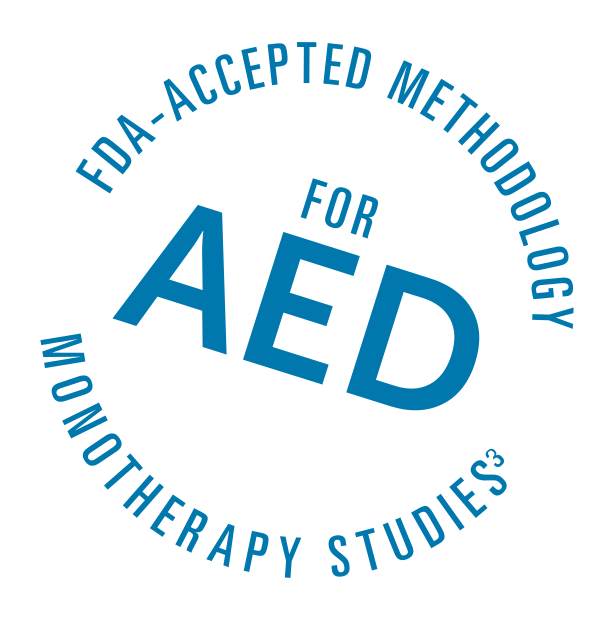

Efficacy
For the treatment of partial-onset seizures as monotherapy or adjunctive therapyeffective seizure reduction
as adjunctive therapy
APTIOM adjunctive therapy was studied in 3 separate randomized, double-blind, placebo-controlled, multicenter studies¹
- Patients were adults with partial-onset seizures with or without secondary generalization inadequately
controlled on 1–3 concomitant AEDs¹- Patients had a median duration of epilepsy of 19 years; 69% were using 2 concomitant AEDs, 28% were
using 1 concomitant AED
- Patients had a median duration of epilepsy of 19 years; 69% were using 2 concomitant AEDs, 28% were
Most commonly used concomitant AEDs in clinical trial patients¹
| Carbamazepine | Lamotrigine | Valproic acid | Levetiracetam |
|---|---|---|---|
|
|||
| 50% | 24% | 21% | 18% |
Study Design
- Patients were randomly assigned to placebo or APTIOM 400 mg, 800 mg, or 1200 mg once daily
(APTIOM 400 mg was evaluated only in Studies 3 and 4 and did not show a significant treatment effect)¹ - Following a 2-week titration phase, patients remained on a stable dose of APTIOM or placebo for
a 12-week maintenance phase¹ - Primary efficacy endpoint in all 3 studies: standardized seizure frequency per 4 weeks during 12 weeks
of maintenance therapy (seizure frequency per 28 days)¹ - Efficacy and safety populations: 1410 and 1447 patients, respectively²
Standardized seizure frequency per 4 weeks during 12 weeks of maintenance therapy was significantly lower with APTIOM vs placebo (P<0.05; primary endpoint)¹
- A statistically significant effect was observed with APTIOM 800 mg in Studies 3 and 4 (Study 5; P=0.058), and with APTIOM 1200 mg in all 3 studies¹
SECONDARY ENDPOINT—PROPORTION OF PATIENTS BY CATEGORY OF SEIZURE REDUCTION FOR APTIOM AND PLACEBO ACROSS ALL 3 DOUBLE-BLIND STUDIES*¹,²
- Response was defined as ≥50% reduction in standardized seizure frequency. Patients in APTIOM clinical studies experienced a range of treatment effects from no response (an increase from baseline in seizure frequency to a modest reduction from baseline in seizure frequency) to a 100% reduction from baseline in seizure frequency.²
- Up to 16% of patients taking APTIOM had 75% to 100% seizure reduction²
For the treatment of partial-onset seizures as monotherapy or adjunctive therapyproven effective as monotherapy

APTIOM monotherapy was studied in 2 identical dose-blinded,
APTIOM monotherapy was studied in 2 identical dose-blinded,
historical-control studies¹
- Patients were adults with partial-onset seizures with or without secondary generalization inadequately
controlled by 1 or 2 baseline AEDs¹,²- Both baseline AEDs could not be sodium channel–blocking drugs, and at least 1 AED was limited to
2/3 of a typical dose
- Both baseline AEDs could not be sodium channel–blocking drugs, and at least 1 AED was limited to
Most Common Baseline AEDs in APTIOM Monotherapy Studies²
| Carbamazepine | Levetiracetam | Valproic acid | Lamotrigine |
|---|---|---|---|
|
|||
| 27% | 25% | 20% | 15% |
Study Design
- Following a 2-week titration phase, baseline AEDs were gradually tapered over a 6-week withdrawal
phase. Patients remained on a stable dose of APTIOM 1600 mg or 1200 mg for a 10-week
monotherapy phase¹ - Primary efficacy endpoint in both studies: Kaplan-Meier (K-M) estimate of the cumulative exit rate at
16 weeks (from beginning of the 6-week AED withdrawal phase to end of the 10-week APTIOM
monotherapy phase) based on predefined exit criteria¹ - Efficacy and safety populations: 332 and 365 patients, respectively²
PREDEFINED EXIT CRITERIA INDICATING AN INCREASE IN SEIZURE FREQUENCY OR SEVERITY¹
Exit required ≥1 of the following¹:
- Status epilepticus
- 1 episode
- Generalized tonic-clonic seizure
- Emergence in patients who had not had one in the past 6 months
- 28-day seizure rate
- Doubling of average monthly seizure count during any 28 consecutive days
- 2-day seizure rate
- Doubling of highest consecutive 2-day seizure frequency during
the entire treatment phase*
- Seizure severity
- Worsening of seizure severity considered by the investigator
to require intervention
- If the highest number of seizures in a consecutive 2-day period was 1, 3 seizures in a consecutive 2-day period
were required to exit.²
- Primary efficacy endpoint in both studies: Kaplan-Meier (K-M) estimate of the cumulative exit rate at
16 weeks (from beginning of the 6-week AED withdrawal phase to end of the 10-week APTIOM
monotherapy phase) based on predefined exit criteria¹
Lower exit rates were demonstrated with APTIOM
1200 mg and 1600 mg monotherapy vs historical control¹,³
- Effectiveness was established if the upper limit of the 95% confidence interval of the exit rate was <65% (the lower
limit of the 95% prediction interval for the exit rate in the pseudo-placebo arms) derived from the historical-control data¹
PERCENT OF PATIENTS MEETING ≥1 EXIT CRITERIA WITH APTIOM 1200 mg OR 1600 mg MONOTHERAPY
(K-M ESTIMATES)¹,³
- The upper limits of the 95% confidence interval of both doses in both studies were below the threshold of 65% derived
from the historical-control data, meeting the prespecified criteria for efficacy¹